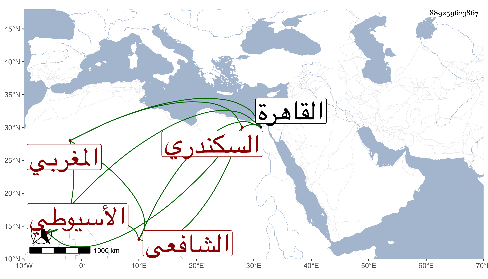

0902Sakhawi.DawLamic.ITO20230111-ara1.EIS1600.889259623867
Biography ID: 889259623867
688
محمد بن عمر بن علي المغربي الأصل ثم السكندري الأسيوطي المولد الشافعي نزيل جامع كزلبغا من القاهرة . أخذ عن أبي العباس السرسي الحنفي ولازمه وتسلك به . وترقى في التصوف مع البراعة في غيره بحيث انتفع به البرهان إبرهيم تلميذ أبي المواهب بن زغدان وذكر بإتقان شرح التائية . ومن نظمه :
| الفقر خير من الغنى | لأنه رتبة الولا |
| ولا عجب إذا سلكنا | سبيل سادات أنبيا |
واستقر في مشيخة التصوف بمدرسة قراقجا الحسني وانجمع عن الناس ، وممن تردد إليه جلال الدين الأسيوطي بل وقرأ عليه ويذكر بزهد وأنه يأكل من نساخته .
